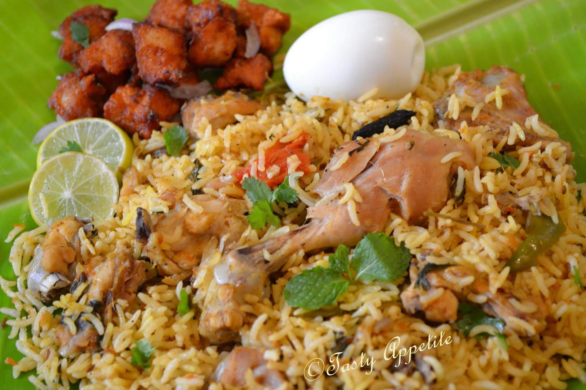

Welcome to Viluppuram
Viluppuram (also spelled as Villupuram and Vizhupuram) is the capital of Viluppuram district, the largest district in the state of Tamil Nadu, India. The town serves as a major railway junction, and National Highway 45 passes through it. With agriculture as its main source of income, Viluppuram's literacy rate has improved since the early 1980s to about 75%. In 2011, Viluppuram 's population stood at 96,253.
History

Viluppuram is one of the thirty two districts which make up Tamil Nadu state situated on the southern tip of India. The district headquarters is located at Villupuram. Villupuram district came into existence on 30 September 1993 when it was created out of South Arcot district.
South Arcot is a former district of India, located in the state of Tamil Nadu. South Arcot was the southern portion of the Mughal province (subah) of Arcot. Arcot came under the control of a local Nawab after Mughals lost control southern India in the 18th century. The subah of Arcot was ceded to the British East India Company in 1801, and subsequently the district was split into North Arcot and South Arcot. On September 30, 1993, South Arcot District was split into Cuddalore District and Villupuram District. Cuddalore was the capital of the erstwhile South Arcot district.
Geography
Viluppuram is located in the far southeast part of India, 40 kilometres (25 mi) west of the Bay of Bengal. The area contains metamorphic rocks formed by pressure and heat belonging to the granite-like gneiss family. There are also three major groups of sedimentary rocks, layers of particles that settled in different geological periods. Kalrayan Hills forest park is located 116 kilometres (72 mi) to the west and Gingee Hills forest park 50 kilometres (31 mi) to the north. The Thatagiri Murugan Temple is about 191 kilometres (119 mi) to the southeast in Senthamangalam with the Lord Siva temple in Koppampatti 153 kilometres (95 mi) southwest of the town. Viluppuram's GPS location is 11° 56' N 79° 29' E.
Government Website
Culture
Viluppuram culture is distinctly different from that of any other city in India. Being a cosmopolitan city, the culture of the city reflects its diverse population which has resulted in a unique blend. Though a modern city, it continues to be traditional and conventional in certain ways. Traditional music, dance and all other art forms of Tamil Nadu are very popular in the city. One can find a unique blend of culture from traditional foods to fast foods, from ancient temple architecture to modern high-rises and from classical music and dance to the growing life in the city. Tamil(தமிழ்) is the city's first language. English is not spoken widely in Viluppuram uses English words liberally. Other languages spoken in the city include Telugu, Hindi Malayalam and Urdu etc.
Viluppuram celebrates a number of festivals like Pongal celebrated in the month of January, is the most important festival of and is celebrated over a period of five days. Pongal has been designated the "State Festival" for its unique celebration that is typical of Tamil Nadu. Though a harvest festival it is still celebrated widely in the city. Tamil New Year's Day signifying the beginning of the Tamil calendar usually falls on April 14 and is celebrated widely. Being a cosmopolitan city, almost all major religious festivals like Deepavali, Ramzan, Bakrid and Christmas are celebrated here.
Cusine Resturants
Idli and Dosai
Meals
Briyani
The primary factors are usually the food itself (e.g. vegetarian, seafood, steak); the cuisine (e.g. Italian, Chinese, Indian, French, Thai) and/or the style of offering (e.g. tapas bar, a sushi train, a taste restaurant, a buffet restaurant or a yum cha restaurant). Beyond this, restaurants may differentiate themselves on factors including speed (see fast food, formality, location, cost, service, or novelty themes such as automated restaurants. Restaurants range from inexpensive and informal lunching or dining places catering to people working nearby, with simple food served in simple settings at low prices, to expensive establishments serving refined food and fine wines in a formal setting. In villupuram , Hotels address and phone number details are listed here:
City Administration
Politically, Viluppuram is part of the Villuppuram Lok Sabha constituency and the Viluppuram State Assembly constituency. The municipality was established in 1919 and was upgraded to a second grade municipality in 1953, a first grade municipality in 1973, and a selection grade municipality in 1988. It has a population of 95,459 (2001 census) and an area of 8.36 square kilometres (3.23 sq mi). The town is divided into 42 wards. The municipal council is composed of 42 ward councillors and is headed by a chairperson elected by voters of the town. Councillors elect a vice-chairperson among themselves while the executive wing is headed by a commissioner, who is assisted by a team of officials including the health officer, municipal engineer, town planning officer, manager, revenue officer and other staff.
Tourism
Gingee Fort
Gingee Fort in Tamil Nadu, India is one of the surviving forts in Tamil Nadu, India. It lies in Villupuram District, 160 kilometres (99 mi) from the state capital, Chennai, and is close to the Union Territory of Puducherry. The fort is so fortified, that Shivaji, the Maratha king, ranked it as the "most impregnable fortress in India" and it was called the "Troy of the East" by the British.
Kalyana Mahal
Built in the indo-Islamic style, the kalyana Mahal is one of the most attractive ruins in the fort. It consists of a square court, surrounded by rooms for the ladies of the Governors household. In the middle of this court, is a 27 meter high square tower, built of stone. The tower has a pyramidal roof.
RajaGiri Fort
Originally it was known as Kamalagiri as well as Anandagiri. The fort was historically considered most impregnable. It is about 800 feet (240 m) in height. Its summit is cut off from communication and is surrounded by a deep, natural chasm that is about 10 yards (9.1 m) wide and 20 yards (18 m) deep.
Kalvarayan hills
It is one part of the Eastern ghats, lies on the western side of the Kallakurichi Taluk. This area spread over an area of 600 sq. kms. approximately with the height ranging from 1000 ft to 3800 ft from the sea level. The place is a veritable paradise for trekkers.
24 Theerthangarargul
It is 2 kms north of Gingee town. The hillock on the western side of the road has two jaina caverns and a huge boulder containing sculptures of all the 24 Theerthankaras 9th Century style. It is only place where all the 24 Theerthankaras are shown in a single large composition.
Thiruvakkarai
A Geological park is about 40 kms from Viluppuram and 25 kms from Puducherry. A national geological park with large number of petrified tree trunks known as fossil are found here.
Mailam
Mailam Is famous for the Lord Murugan. This temple is Located on small hillock at Mailam. The pilgrimage visit this temple and get the blesses of Lord Murugan.It is located near Tindivanam – Puducherry Road. The Panguni Uthiram festival fascinates a large crowd of devotes from all over TamilNadu.
Veedur Dam
The dam with its reservior fulfill 1.5LAKH acre of farm land's water requirement providing the good harvest and makes the civilisation to feel self sufficient. veedur dam adopt with the children's park located between the Tindivanam - Villupuram Highwaynear Vikravandi .
Marakkanam
Marakkanam is located at 22 kms from pondicherry and 35 kms from Thindivanam. In Marakkanam there is a peaceful beach. In the production of salt Marakkanam places second position in Tamilnadu. The Salt Field is famous for Marakkanam.
Divisions
Villupuram district has 11 taluks
.Transport
- Viluppuram is well connected by roads to major cities and to the rest of the state. Villupuram has the longest National roads of any district in Tamil Nadu.
The major national highways of the town are: - NH 45, which connects Chennai to Theni, via Viluppuram–Tiruchirapalli–Dindigul-Periyakulam (four-lane) - NH 45A, which connects Viluppuram to Nagapattinam via Pondicherry and Cuddalore (two-lane) - NH 234, which Connects Villupuram to Mangalore via Thiruvannaamalai-Vellore–Gudiyatham (two-lane) - NH 45C, which connects (Villupuram) Vikravandi to Thanjavur via Panruti–Neyveli–Kumbakonam and intersects with NH 45A in Koliyanur, about 5 km from Viluppuram.
Viluppuram railway station
Pondicherry Airport
Chennai Airport
Viluppuram Junction railway station is a junction train station located in Villuppuram, Tamil Nadu. Being a prominent railway station, it serves as the distribution point of rail traffic from Chennai, the state capital of Tamil Nadu, towards the southern parts of the state. It is one of the top 5 junctions of Southern Railways.
The nearest airport is Pondicherry Airport at Pondicherry, in Puducherry, approximately 40 km from Viluppuram. Pondicherry Airport is connected to Bangalore by commercial airlines.

The nearest major airport is the Chennai International Airport (MAA), approximately 147 km from the town; the next closest major airport is Tiruchirapalli Airport, approximately 160 km from the town.
Climate
Since the town is landlocked, the weather in Viluppuram is generally humid and hot. It relies on the monsoon for rain during October, November and December. Summers are very hot, and temperatures can get up to 40 °C. Winters are moderate with temperatures ranging between 30 °C and 35 °C.